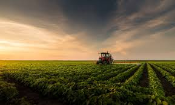
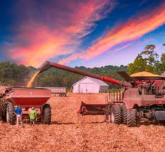

Importância do Agronegócio
O agronegócio representa cerca de 25% do PIB nacional e tem sustentado o Brasil em momentos de crise, como em 2017 e na pandemia da COVID-19. Apesar disso, ainda carece de reconhecimento e valorização proporcional à sua importância econômica.
Êxodo Rural e População Rural
Atualmente, apenas 12,6% da população brasileira vive em áreas rurais, um reflexo do aumento do êxodo rural. A vida urbana tornou-se padrão, mas é essencial lembrar que campo e cidade devem receber atenção equilibrada, pois são interdependentes.
Produção Agrícola e Papel das Cidades
O campo fornece alimentos e matérias-primas como grãos, leite, carne e vegetais. Já as cidades transformam esses recursos com ajuda da indústria e da tecnologia, desenvolvendo maquinários que aumentam a produtividade e reduzem os impactos ambientais.
Conclusão: Conexão Campo-Cidade
Fortalecer a união entre o campo e a cidade é essencial para o desenvolvimento do Brasil. Essa parceria promove a diversidade, estimula o progresso econômico e garante um futuro mais equilibrado e sustentável.